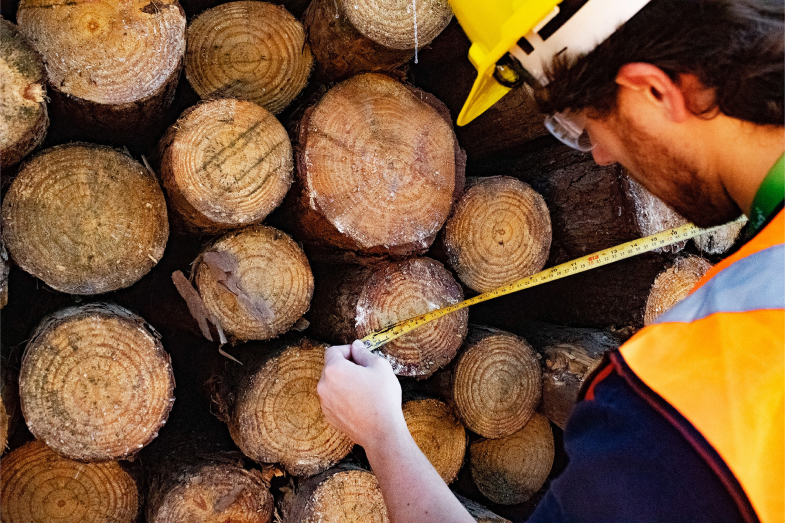

-

MEDIÇÃO DE MADEIRA
Mensure os diâmetros das toras de madeira em corte transversal de um jeito moderno, rápido e acessível.
Obtenha a cubagem da sua pilha ao alcance das suas mãos de uma forma única e nunca vista antes.
-

CLASSIFICAÇÃO POR SORTIMENTO
Separe sua madeira de acordo com os sortimentos da pilha com filtros personalizados.
Através de uma seleção precisa, classifique os diâmetros tanto no envio quanto no recebimento do material, sem deixar toras fora do padrão afetarem seus resultados financeiros.
-

FRAMELOG
Já tentou medir uma pilha muito extensa e demorou horas para fazê-lo?
Com a ferramenta Framelog, é possível retirar vários fatores de empilhamento ao longo do curso da pilha e otimizar esse processo ao estimar o seu volume total.